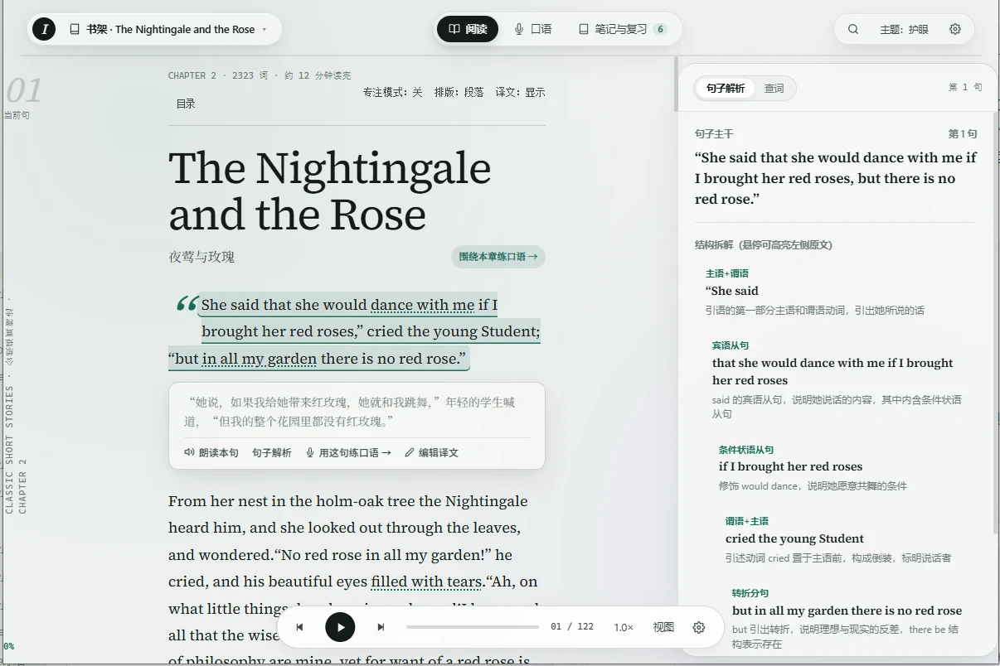
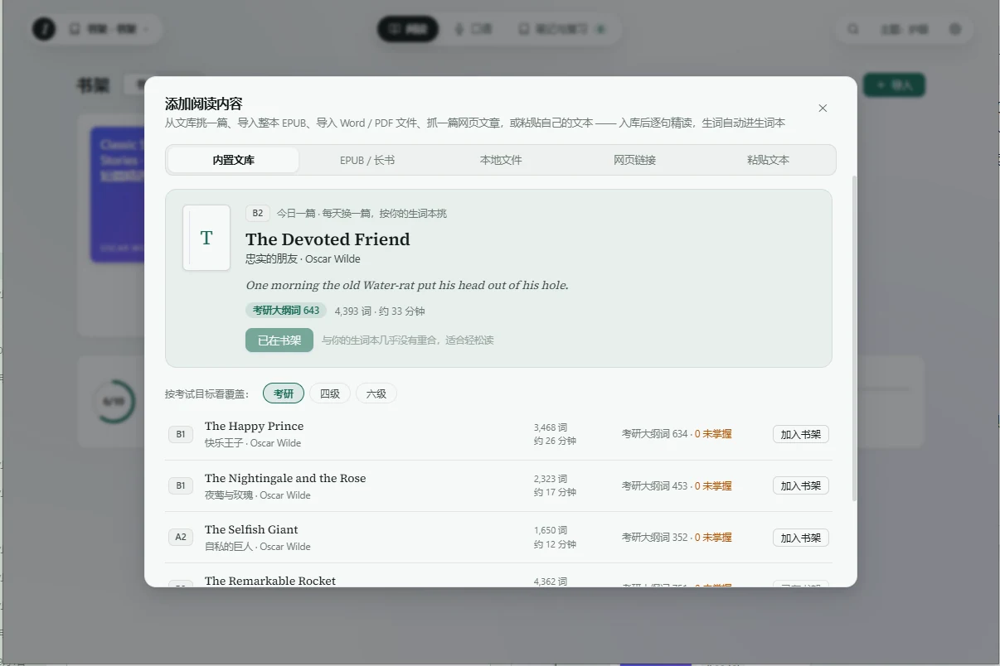
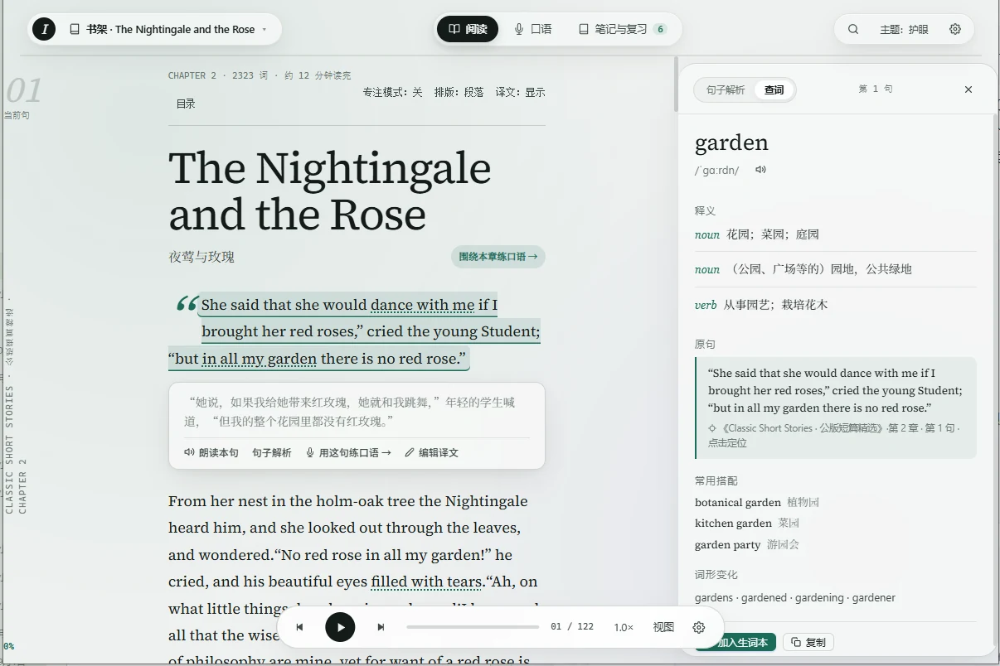
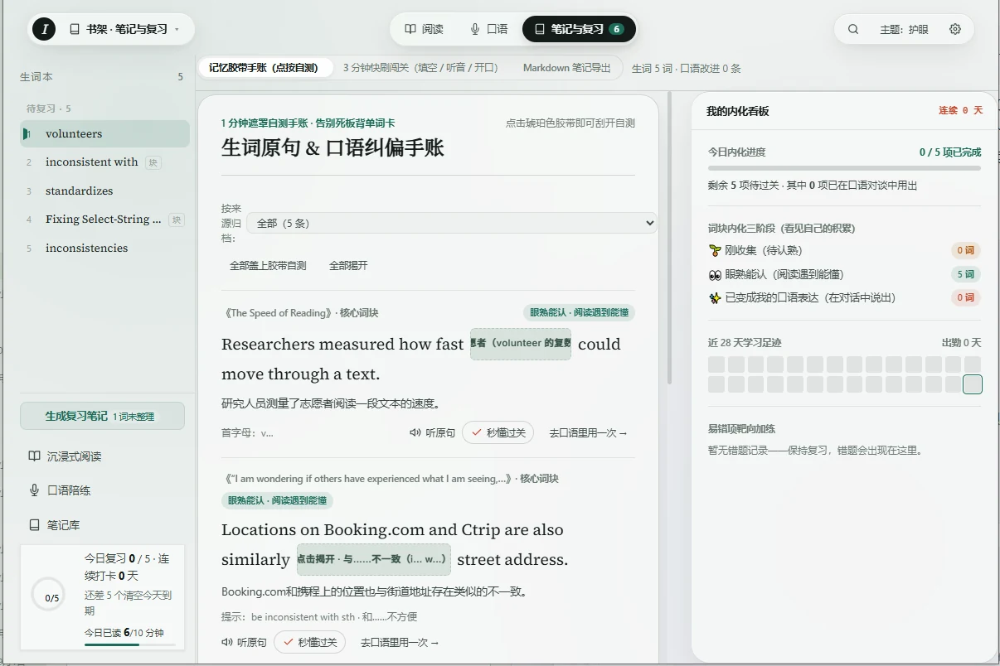
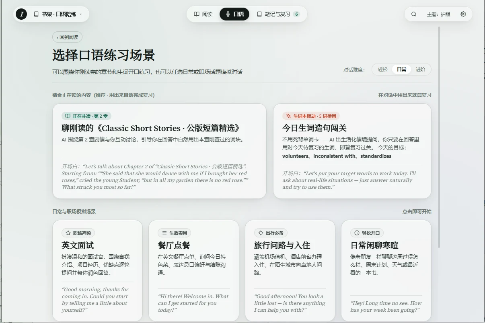

读不断
原文译文逐句对照，点词查义不跳出，朗读从任意句开始——阅读节奏不会被打断。
桌面端 · WINDOWS / macOS
不是你不行，是工具不对。沉浸阅读室让原文译文对照、点词查义、朗读跟读都在同一间房——从此，长文真的能读完。

原文译文逐句对照，点词查义不跳出，朗读从任意句开始——阅读节奏不会被打断。
收藏的词句保留原文来源，间隔复习时还能看到当初读到它的那个句子。
跟读练习、场景对话，把刚读完的新词带进口语——读过的内容练成自己的表达。
01 — 沉浸阅读室
原文与译文逐句对照。点一句就从那里朗读，点一个词就查看释义、例句并收藏——文章、词条和阅读进度留在同一处。
A — 选文章
从内置文库开始，也可以导入 EPUB、TXT、DOCX、PDF，粘贴文本或添加公开网页文章。长书按章节整理，读到哪里都能接着往下。

B — 点词查义
点选句子里的词，查看释义、发音和例句；需要记住的表达可以直接收藏。查完回到原句，继续阅读。

C — 收词复习
从阅读室收藏的词句会保留来源，回到复习时仍看得到原句，也能把新表达带进口语练习。

02 — 口语练习
读完一篇关于气候变化的文章，然后在对话中自然用上 carbon footprint、renewable energy？口语练习让新词不再是背了就忘的单词表——读什么，就练什么。

朗读、跟读与口语练习的可用方式会随 Windows 和 macOS 版本更新。
03 — 桌面划词
这些能力是阅读路上的辅助入口：遇到一句难懂的话，选中它；遇到图片里的文字，框选它，再回到文章继续读。
04 — 下载
Windows 与 macOS 分别更新，请以 Release 页面的版本说明为准。
双击安装即可使用，覆盖安装即可升级。你的阅读历史和生词本不会丢失。
下载 Windows 版AGPL-3.0 · 可自行编译
下载 .zip 后解压，把应用拖进「应用程序」。正在申请 Apple 官方认证，首次打开请在「系统设置 → 隐私与安全性」中点击「仍要打开」。
下载 macOS 版支持 Apple 芯片与 Intel 芯片
05 — 常见问题
关于阅读室、模型配置、平台版本与数据处理。
如果你想读英文原版书、文章或技术文档，但总是读不下去——遇到生词就卡住，查词跳来跳去，读到一半就忘了前面讲什么——沉浸阅读室就是为你做的。它把「读-查-记-练」放在一起，让你真正读完一篇长文。
Kindle 查词慢、词典离文章远；欧路词典查完词要回到原文重新找；浏览器插件只翻译不记录。沉浸阅读室把原文译文、查词、生词本、阅读进度、口语练习放在同一个桌面应用里——读到哪里，词在哪里，进度在哪里，全都留在一处。
应用本身完全免费，使用 AGPL-3.0 开源；基于它的修改版对外分发时需同样以 AGPL-3.0 开源。翻译和语音服务需要你自己配置 API Key，费用由你选择的服务商（如 OpenAI、DeepL、GLM 等）收取；你也可以配置本地模型，完全免费。
阅读历史和生词本完全保存在本机，不会上传。只有在调用翻译或语音服务的那一刻，相关文本才会发送给你配置的服务商；截图 OCR 在本机识别。详情见 项目说明。
应用正在申请 Apple Developer ID 公证。下载后，右键点击应用图标选择「打开」，在弹窗中点击「仍要打开」即可。或者前往「系统设置 → 隐私与安全性」，在底部找到被拦截的应用，点击「仍要打开」。
内置分级文库（A2 / B1 / B2），也可以导入 EPUB、TXT、DOCX、PDF，添加公开网页文章或直接粘贴文本。长书按章节整理，读到哪里自动保存进度。扫描版 PDF 的文字识别能力因平台和文件而异。
核心功能（阅读室、划词翻译、截图 OCR）两端都有。但因为系统权限和底层实现不同，个别能力和发布节奏会有差异，请以各平台 Release 说明为准。